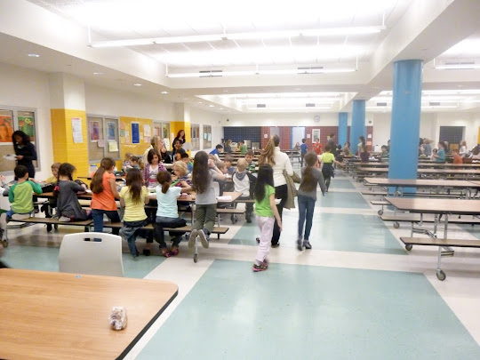
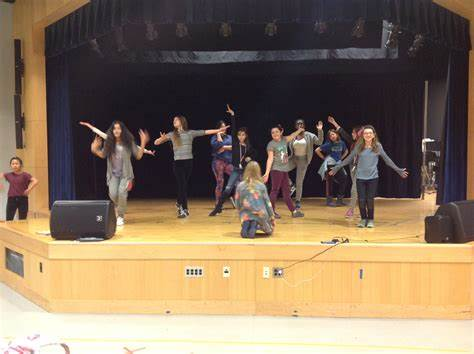
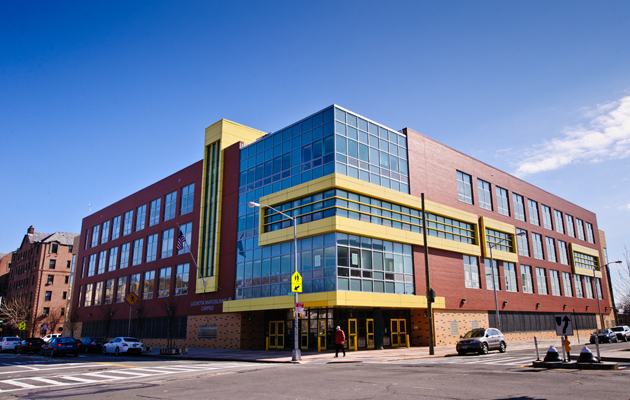
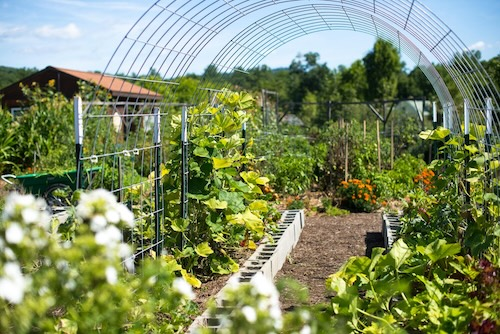

<!DOCTYPE html>
<html>
<head>
   
    <title>my school teaser trailer</title>
    <head><link rel="stylesheet"
        href="style.css">
        <link rel="stylesheet">
<scriptsrc="https://ajax.googleapis.com/ajax/libs/jquery/3.4.1/jquery.min.js">
    
</head>
</html>
<body>
    <div class="container">
        <iframe width="951" height="502" src="https://www.youtube.com/embed/Iu-1Cjsf470" title="Brooklyn School of Inquiry 2018" frameborder="0" allow="accelerometer; autoplay; clipboard-write; encrypted-media; gyroscope; picture-in-picture; web-share" referrerpolicy="strict-origin-when-cross-origin" allowfullscreen></iframe>
            

            <h4 class="text-capitalize"><kbd>Lunch room</kbd></h4>
            

          
          
      <hr>
      <h5 class="text-success text-capitalize" >i had first came there on septenber 7 2019</h5>
      <p class="text-muted" >this is out lunch room.</p>
  </div>
  <div class="travel_mainDiv"> 
</center>

    
    <h4 class="text-capitalize"><kbd>Auditorium</kbd></h4>
    

  
  
<hr>
<h5 class="text-success text-capitalize" >I had fist went inside on sep 9 2019</h5>
<p class="text-muted" > This is where all of our schools conserts and plays are. </p>

</div>
<div class="travel_mainDiv"> 
</center>
<div class="travel_mainDiv"> 
    

    <h4 class="text-capitalize"><kbd>Building</kbd></h4>
    

  
  
<hr>
<h5 class="text-success text-capitalize" >I had fist went inside on sep 7 2019</h5>
<p class="text-muted" > This is a picture of our school Building. </p>
</div>
</center>


<h2 class="page-header" id="movies"This is our first school garden></h2>
<span class="bg-primary movie_head" data-toggle="collapse" data-target="#avengers_endgame">
    <span class="glyphicon glyphicon-film" ></span> Open House<i class="fa fa-sort-desc" ></i>
</span>
  <span id="avengers_endgame" class="collapse">
    <span class="movie_text">
        
        
        <p>We are thrilled to announce that the BSI STEMLab, a New York Sun Works partner is nearing completion! The BSI STEMLab is an ambitious, year-round enclosed K-8 STEM learning lab with sustainable farm in the heart of South Brooklyn on the roof of a three-school campus. It has been a dream in the making since the summer of 2011. The STEMLab is designed to serve as a best practices incubator for students and educators throughout New York City.

            The BSI STEMLab is the NYC DOE’s largest learning lab greenhouse. Urban public school students will get dirty, observe, hypothesis, test, harvest, and engineer solutions through inquiry-based, cross-curricular projects. The greenhouse will grow 5,000lbs of produce annually. Plans include a youth-run farm stand in our adjacent public park and donations to local organizations.
            
            Thank you to our generous capital fund partners Brooklyn Borough President Eric Adams and former Council Member David Greenfield for making this dream a reality! We are also grateful for our dedicated parent volunteers and the community grant supporters who ensure the continued success of our innovative learning lab!</p>
    </span>
</span>
<iframe src="https://www.google.com/maps/embed?pb=!1m18!1m12!1m3!1d3029.0327873381725!2d-73.9895421239429!3d40.60710024403088!2m3!1f0!2f0!3f0!3m2!1i1024!2i768!4f13.1!3m3!1m2!1s0x89c24503348775ad%3A0x1e671113067bfc9d!2sPS%2FIS%20686%20Brooklyn%20School%20of%20Inquiry!5e0!3m2!1sen!2sus!4v1719752630243!5m2!1sen!2sus" width="600" height="450" style="border:0;" allowfullscreen="" loading="lazy" referrerpolicy="no-referrer-when-downgrade"></iframe>


